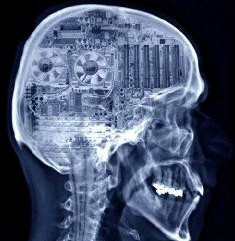
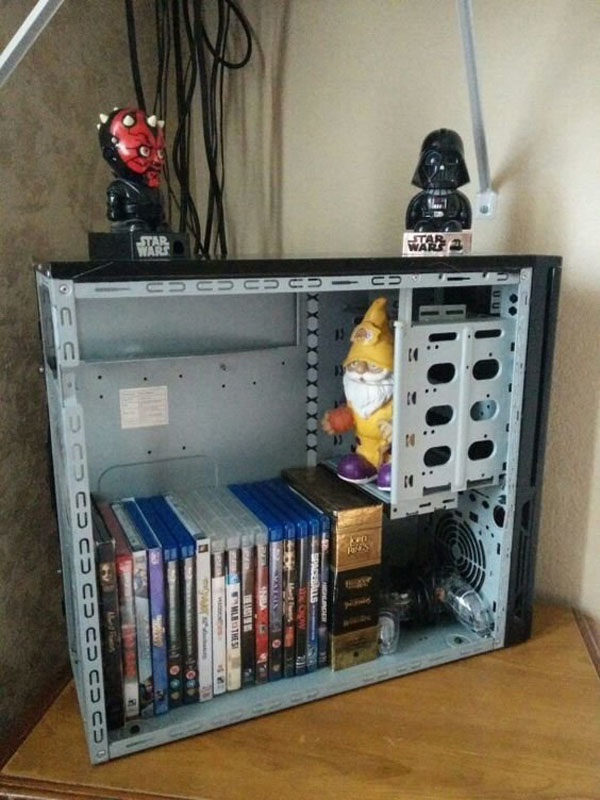
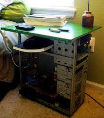
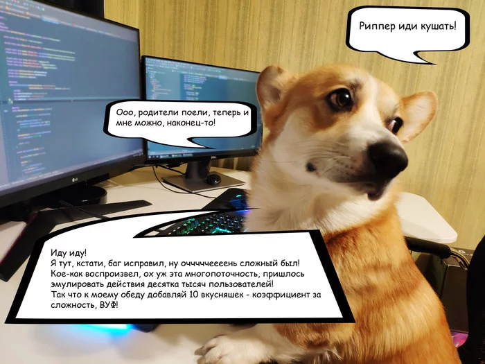
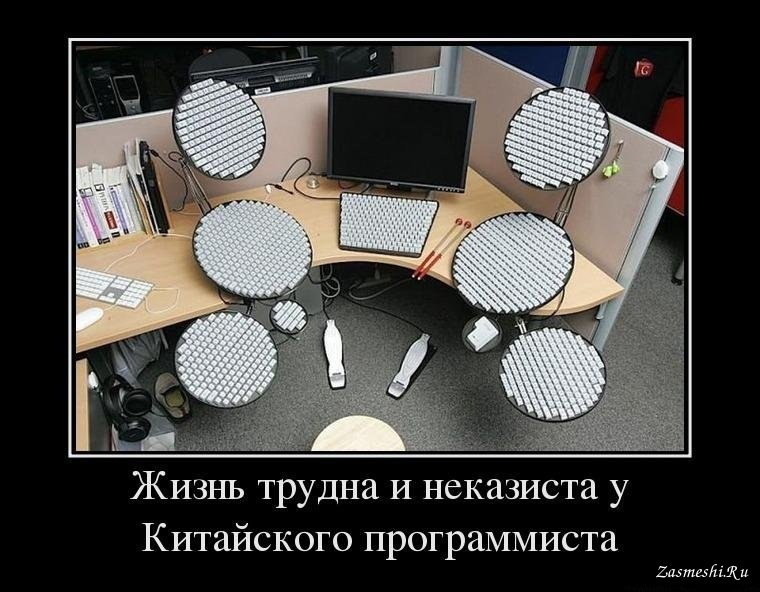
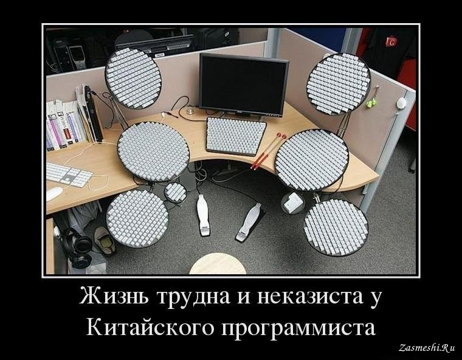
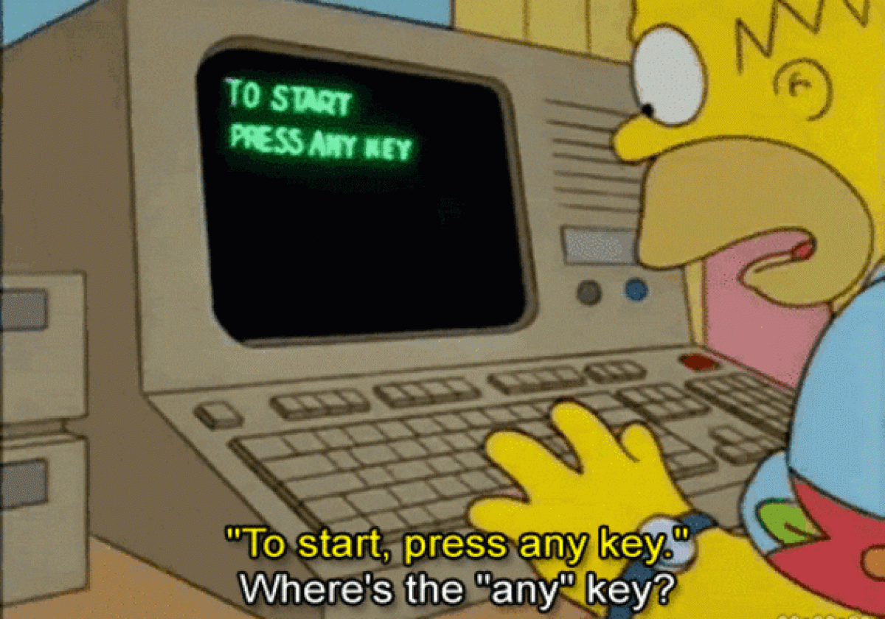
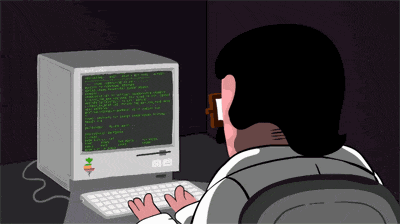

Все сидела и думала, как начать свой рассказ. Хотела, чтобы было в меру пафосно, с красивым вступлением (о первых ЭВМ, о людях, которые их разработали, о вечных темах, описываемых в мире литературы и кино). Но каждый вариант застревал на второй-третьей строчке. Поэтому, без лишних слов – я живу с программистом.

Тема и вправду благодатная. Уже много историй было написано и об IT-шниках, и о программистах в частности, каждая третья цитата на bashorg посвящена их работе. А есть еще замечательный роман Алекса Экслера «Записки невесты программиста», над которым я хохотала до слез. Мысли главной героини были настолько схожи с моими, да и диалоги между ней и ее будущим мужем, что казалось, что частично списали с моей жизни.


Так что же такого особенного в жизни с программистом? Вроде бы и ничего. Но постепенно начинаешь замечать, что вместо прикроватной тумбочки у тебя (заметьте, не у него, а именно у тебя) полупустой системный блок. Самое интересное, что ты даже умудряешься называть это правильно, а не процессором. На это, конечно, потребовался месяц постоянных исправлений в разговорах, но кто это вспомнит? Повсюду лежат провода, железяки различные. Кстати, прикроватные тумбочки все-таки имеются в доме, да только у них колесики сломались от тяжести всего этого непонятного барахла, которое мистическим образом появляется в квартире. Из всех кабелей так и хочется сплести косичку, смотать в клубок – в общем, сделать все что угодно, чтобы расчистить пространство. Я скоро как Рапунцель буду поступать. Пусть домой на девятый этаж по ним поднимается.

Забудьте про нормальные клички для ваших совместных животных. Теперь они все станут Цисками, Апачами, Туксиками, Джавами и черт знает еще какими компьютерными и программными богами. Нет, Марусь и Кеш больше не будет, по комнате будет передвигаться большой наглый Ассемблер, подчиняющийся только обладателю столь бурной фантазии. Вроде бы на детей это не распространяется, хотя еще есть «Звездные войны», а там и Люк, и Лея, и (боюсь даже писать – вдруг сбудется) Йода. Так и представляю себе, как он бы сыну постоянно говорил: «Люк, я твой отец». А вдруг это был бы серьезный разговор? Он ведь не удержится и обязательно заржет, полностью разрушив воспитательный момент!
 

В целом-то, конечно, все как у всех.
Как и любой мужчина, он от меня требует логики. Но если иному хватит хотя бы намека на логику, из которого он сам как-нибудь сможет вытащить нечто разумное, то программиста это не удовлетворит. Ему надо последовательно объяснить, как ты пришла к этому выводу. Желательно со схемами, расчетами или простеньким кодом. Поверьте, вполне вероятно, хотя и не обязательно, что при совместном проживании вы как-нибудь дойдете до этапа, на котором он откроет перед вами в браузере учебник по Hyper Text Markup Language и предложит вам попробовать понять, что там написано. Он будет уверять, что это для вашего самообразования, но в этих словах будет лишь сорок процентов правды. На самом деле, это коварное создание хочет от вас избавиться на часок, чтобы заняться более сложными делами, а вы постоянно отвлекаете его разговорами.


Кстати да. Программисты – это люди, которые действительно любят работать. Ну, в большинстве своем. Они ловят какой-то кайф когда кодят. Даже если у них что-то долго не выходит, сама прелесть в том, что наступает момент, когда они осмысленно или чудом находят решение проблемы. И могут поделиться своей радостью, когда вы уже тихо-мирно в три часа ночи спите.


Сколько статеек и рассказов мне было выслано на прочтение, в которых прямым текстом было написано «ПРОГРАММИСТА НЕ КАНТОВАТЬ!». Ведь вхождение в процесс – занятие длительное, сопровождаемое сначала просмотром самых разных порталов, как юмористических, так и новостных. Я уже поняла, что компьютерщики уподобились своему жизненно необходимому аппарату. Это нам, обычным пещерным людям, кажется, что ноутбук выполняет несколько дел одновременно. Но нет, там своя схема, при которой пока одно действие совершается, другое временно приостанавливается. Так и мозг вашего домашнего программиста. И если ты, да упасет тебя Линукс от этого, вдруг захочешь рассказать ему что-то, когда он пишет, то молчи, пожалуйста, иди, пожуй чего-нибудь. Мне повезло, моя версия довольно-таки терпеливая. Но после нескольких таких вот отвлеканий, когда надо было из мозга выгрузить процесс «работа» и загрузить процесс «ответ на еще один вопрос», на мою почту и посыпались вышеуказанные рассказы. Даже спорили с ним, мол, я и десяти минут не смогу провести молча. Как порядочная девушка, я обиделась на него минут на двадцать. Кстати, я уже прочитала базовый учебник по HTML и перешла к изучению CSS.

Кроме того, что программирование – работа, это еще может быть и отдыхом. Есть такой сайт, как Хабрахабр, и есть люди, которые устраивают сходки для общения в реальной жизни. Так вот, теперь и я отношусь к людям, которые периодически появляются на подобных встречах. И вот сижу среди хабралюдей и словно очутилась на другой планете, где разговаривают странными словами и цифрами (честное слово, их разговоры именно виде цифр и представляю). Страшно становится тогда, когда начинаешь понимать отдельные фразы.

Помните, писала про мою прикроватную тумбочку? Так вот этот системный блок стал началом крепкой дружбы между программистом, сисадмином, инженером и гуманитарием (догадайтесь, кто я из этой цепочки?). Случилось это так. Мой программист захотел себе системный блок ну и спросил где-то у кого-то, на что ему ответили: «Есть – приезжай». И после нескольких недель сборов в субботний осенний вечер едем через всю Москву забирать это железо. Я водитель не самый худший, ну я очень на это надеюсь, но на большие расстояния почти не ездила, а новых маршрутов боюсь как огня. Доехали со штурманом довольно-таки быстро. Всю дорогу мы думали, что едем забирать системник у мальчика лет шестнадцати, который живет с родителями. Общепринятой валютой в этой сфере принято считать пиво. Шестнадцатилетний паренек может и рад будет, но вот родители явно не одобрят. Кстати, как потом выяснилось, с той стороны трубки думали, что фраза: «Мы едем» подразумевает под собой отца и сына. При всем моем воображении, на папу я не смахиваю. В итоге с обоих концов сотовой связи оказались молодые пары. Пока наши мальчики копошились в своих железках, мы с будущей подружкой сидели на кухне и пили чай с шарлоткой, выискивая общее в наших жизнях. Оказалось, что и сисадмины вытворяют подобные чудеса, что и программисты. Просидев до часу ночи у них и сделав повторную вылазку до ближайшего магазина за общепринятой валютой и соком (я водитель ответственный), мы решили, что можно и к нам поехать, в Дьяблу вторую играть. Ну и поехали. Сидели до утра. А после всего этого и стали дружить, чему безумно рады.

Что касается Diablo II, да и вообще всех игр. Раньше никогда не играла, не затягивал процесс, впрочем, и сейчас тоже. Но, думаю, парни оценят, хотя и не все, я прошла эту игру на нормале. Мой домашний программист сказал, что я могу этим гордиться.
В общем, жизнь у меня насыщенная и веселая. И честно вам признаюсь, я очень рада, что живу с программистом. Даже не смотря на то, что вместо тумбочки у меня системный блок, и на то, что мой фен будет несколько часов работать на холодном режиме, обдувая видеокарту, пока он будет настраивать сервер. Все это мелочи, главное научиться обходить компьютерные детали, в хаотичном порядке размещенные на полу. И будет и счастье, и целые пальцы.